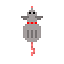
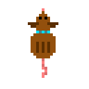

Devido a uma guerra civil, Camboja teve seus campos cobertos por bombas e minas terrestres. Mas graças aos estudos dos pesquisadores da universidade da Tanzânia, uma solução foi criada! Com treinamento avançado, ratos gigantes africanos foram capazes de identificar substâncias químicas explosivas com seu olfato. Dessa forma, Magawa, um dos ratos enviados para Camboja, foi capaz de localizar centenas de bombas e limpar uma área de mais de 225 mil metros quadrados; com isso, ele foi consagrado como rato herói e recebeu uma medalha.
Neste jogo, você vivenciara na pele, juntamente de um amigo, como é a vida de um Rato Gigante Africano em sua missão de localizar bombas.
O player deve competir contra outro player para ver quem consegue farejar mais bombas e limpar um terreno o tornando seguro para humanos. Caso os jogadores não consigam farejar todas as bombas a tempo, seus companheiros humanos irão passar pelo campo e infelizmente se acidentaram, assim sendo, a missão falha e os dois perdem. Se os jogadores conseguirem encontrar todas as bombas, eles vencem, pois a conquista do meu companheiro é a minha vitória também, porém, quem farejar mais bombas dentro do tempo se torna o rato herói e ganha uma medalha.
Os jogadores se movem na vertical e horizontal, um quadrado por vez num tabuleiro que varia de tamanho de acordo com a dificuldade. Existem diversas bombas pelo campo, assim como no jogo campo minado, o player deve apontar a posição das bombas e dos espaços seguros; O player pode se mover livremente pelos espaços determinados como seguros. Caso algum player marque uma bomba erroneamente, ele é explodido e ambos perdem, pois, na guerra, a morte do meu companheiro significa um amigo a menos.
Explorando as extremidades da área segura, assim como no campo minado, o jogador saberá quantas bombas estão ao seu redor numa área de 1 quadrado para todos os lados, com essa informação o jogador deve marcar as posições que estão com bombas e as áreas seguras; Olhando para o quadrado e apertando um botão determinado o jogador pode marcar os quadrados do campo. Caso o jogador marque uma área segura como uma posição de bomba, ele perde pontos. Caso o jogador marque a posição de uma bomba, ele é capaz de caminhar pelo explosivo já que tem consciência do perigo e anda com cuidado se aproveitando do seu peso baixo.
Ayanna: Uma Rata gigante Africana da cor cinza que usa uma coleira vermelha. Use W,S,D,A para controlá-la pelo campo. Apertando E, você pode marcar as posições que crê terem bombas. Segurando SHIFT e usando W,S,D,A, Ayanna rotaciona no próprio eixo para poder marcar bombas com mais precisão.
Akina: Uma Rata gigante Africana da cor marrom que usa uma coleira azul. Use as setas direcionais para controlá-la pelo campo. Apertando Numpad 0, você pode marcar as posições que crê terem bombas. Segurando SHIFT e usando as setas direcionais, AKina rotaciona no próprio eixo para poder marcar bombas com mais precisão.
